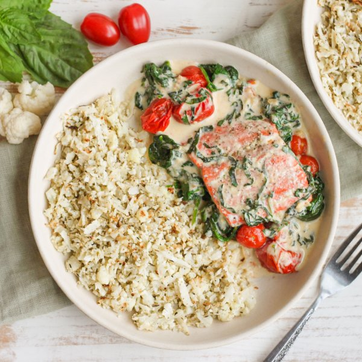

Salmon with Cauliflower Rice, Spinach, Tomatoes & Creamy Basil Sauce

Prep Time
35 min
Nutrition (per serving)
693.3 kcalCalories
50.3 gProtein
17 gCarbs
48.5 gFat
Full nutrition table
| Calories | 693.3 kcal |
| Total fat | 48.5 g |
| Saturated fat | 20.1 g |
| Trans fat | 0.9 g |
| Cholesterol | 167.7 mg |
| Sodium | 225.7 mg |
| Carbohydrates | 17 g |
| Fiber | 5.8 g |
| Sugars | 6.9 g |
| Protein | 50.3 g |
| Potassium | 1855.1 mg |
| Calcium | 228.2 mg |
| Iron | 4.5 mg |
| Vitamin A | 1813.5 IU |
| Vitamin C | 103.9 mg |
| Vitamin D | 632.8 IU |
Cookware
Ingredients
- 2 (5 oz) pkgsbaby spinach
- 1 medium headcauliflower
- 8 fl ozchicken or vegetable broth
- 1 small pkgfresh basil
- 1 pintgrape tomatoes
- 8 fl ozheavy whipping cream
- 2 ozParmesan cheese
- 1 ½ lbsalmon fillet
- black pepper
- extra virgin olive oil
- garlic powder
- Italian seasoning
- salt
Steps
- Preheat oven to 425°F.
- Wash and dry the fresh produce. (Skip the spinach if it came pre-washed.)1 medium head cauliflower
1 pint grape tomatoes
1 small pkg fresh basil
2 (5 oz) pkgs baby spinach - Cut cauliflower head into quarters; using a box grater, hold the stem end of the cauliflower and coarsely grate. (Alternatively, transfer cauliflower to the bowl of a food processor; pulse until rice-like in consistency.) Place in a medium bowl.
- Add oil and spices to the bowl with the cauliflower, then stir to combine. Transfer cauliflower rice to one half of a large baking sheet pan and spread out in an even layer.4 tsp extra virgin olive oil
1 tsp Italian seasoning
½ tsp salt
¼ tsp black pepper - Pat the salmon dry with paper towels and place, skin-side down, on the other half of the baking sheet. Drizzle with oil, then season the top side with salt and pepper.1 ½ lb salmon fillet
2 tsp extra virgin olive oil
½ tsp salt
½ tsp black pepper - Place baking sheet in the oven (it doesn't have to be fully heated) and roast, stirring cauliflower halfway through, until rice is tender and salmon is cooked through, 13-15 minutes. Remove from oven.
- Meanwhile, preheat a large skillet over medium-high heat.
- Once the skillet is hot, add additional oil and swirl to coat the bottom. Add tomatoes and salt; cook, stirring occasionally, until tomatoes start to burst, about 4 minutes.4 tsp extra virgin olive oil
½ tsp salt - While the tomatoes are cooking, finely grate Parmesan.2 oz Parmesan cheese
- Add Parmesan, broth, cream, and garlic powder to the skillet; stir to combine the sauce and bring to a boil over high heat. Once boiling, reduce heat to medium-low and simmer, stirring occasionally, until sauce has thickened, 6-7 minutes.8 fl oz (1 cup) chicken or vegetable broth
8 fl oz (1 cup) heavy whipping cream
1 ½ tsp garlic powder - Meanwhile, pick basil leaves off the stems, roll up crosswise, and thinly slice into ribbons.
- When the sauce is done, add basil and spinach to the skillet in handfuls, waiting for the spinach to wilt slightly before adding the next handful. Remove from heat.
- To serve, divide cauliflower rice, salmon, and sauce between plates or bowls. Enjoy!